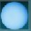

| Mercurio | |
 | Venus | |
 | La Tierra | |
 | Marte | |
 | Jupiter | |
 | Saturno | |
|  | Urano | |
 | Neptuno | |
 | Plutón | |
| Deja tu opinión | ||
MERCURIO: UN EXTRAÑO PLANETA
El Sol está tan cerca de él que un astronauta que visitase Mercurio lo vería dos veces y media más grande que desde la tierra y siete veces más luminoso. Hasta el Mariner 10, poco se sabía sobre Mercurio debido a las dificultades de observación que tienen los telescopios de la Tierra. En su máxima elongación está a solo 28 grados del Sol tal como se puede ver desde la Tierra. Debido a esto, solo puede ser observado durante el ocaso o en horas diurnas, atravesando una masa considerable de la atmósfera terrestre.
Tanto el movimiento de rotación como el de traslación del planeta, tienen singularidades muy especiales solo explicables de forma satisfactoria por la teoría de la gravedad de Einstein (según su teoría de la relatividad general de 1916). Estas notorias diferencias están claramente relacionadas con su cercanía al sol y la influencia del resto de planetas, así como por su reducido tamaño.
Desde el punto de vista físico, Mercurio es un objeto bastante parecido a la Luna, sobre todo por la ausencia de una atmósfera de densidad significativa. Tiene un campo magnético del orden de la centésima parte del terrestre, lo que confirma un núcleo constituido de hierro y níquel principalmente. La superficie es semejante a la lunar, por la abundancia de cráteres de impacto y por las grandes llanuras de forma aproximadamente circular y rodeadas de sistemas anulares de cadenas montañosas, también ellas formadas, con toda probabilidad, en el periodo de intenso bombardeo meteorítico que siguió a la formación de los planetas.
Como "terreno raro" se describe mejor a estas colinas, región delineada de Mercurio. Ésta área es el punto antípoda del gran cráter Caloris. La onda de impacto producida por el impacto del Caloris se reflejó y se enfocó a su punto antípoda, así se revolvió la corteza y se rompió en una serie de bloques complejos. El área que cubre es de cerca de 100 kilómetros (62 millas) de lado.